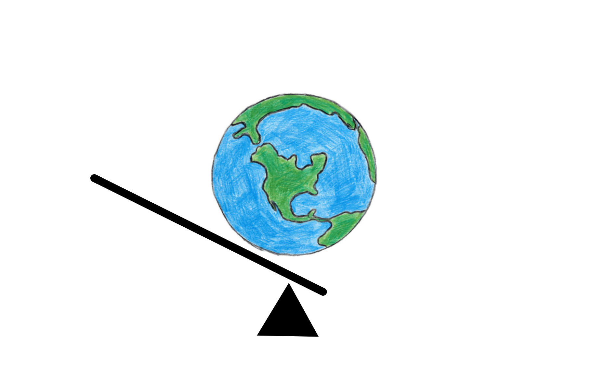

Published: August 21st, 2026
"Carry a big stick" — Theodore Rosevelt ... and know where to use it
What do you want to do in life? seems to be a good point to start. Perhaps a more relevant version could be, what would you want your life to be like? Or as perhaps what will you want your life to have been like?1 I'll begin with a few assumptions that I consider uncontroversial, obvious even -- "self-evident" as Benjamin Franklin once so eloquently put it2. You may think these assumptions are non-comprehensive or that my deduction with them is flawed but I'd be shocked, and frankly unsure whether I could hold a reasonable conversation on morals with you at all, if you disagreed with their substance.
I don't claim jotting these down is any particular feat of intellect to be celebrated by generations to come. But in the regular intellectual vertigo that I talk myself into regarding what even is a meaningful thing to do, it does sometimes help imposing at least the most general of invariances on the problem. I hold these three things to be self-evident. More to the point the question is how to act concretely on them. To lead a good life requires at least some amount of financial independence. So you want to be sufficiently rich, although (likely) no richer. If you don't have this and are not on track to achieve it (perhaps because you're from a low-income or low-privilege background), you should probably solve that first and the rest of this essay isn't particularly relevant to you (I'll assume). Let the entitled, spoilt brats have a conversation amongst themselves.
What actually grows the pie?
There are many potential strategies to fulfill on assumption 1). Givewell and the wider EA community have a lot of opinions and ideas on how to do so. To the exclusion of the other two assumptions, the problem would actually be trivial: You just wake up every morning and go collect a single bag plastic. You have adhered to the letter (if not the spirit) of assumption one. You never know ... it may save a turtle some day.
It is among introducing the other two assumptions as constraints that the real-world trade-offs we all think about acutally emerge: Should I take a higher paying (morally more dubious) job so I can spend a lot more on charity in absolute terms? Should I first take up a corporate gig so I can work my organizational management skills so I can later in my career become a more effective CEO of a NGO (or even start one in the first place with my own capital)? Should I rather slow-grow my company than take VC money because I think can have greater freedom and higher moral impact -- how much leverage on the world am I giving up though? Clearly, in practice, these questions are everything but trivial.
I'll give you one version of this multi-parameter optimization problem that I (think I) am facing: I do not think I'm well suited to run (or work at) a NGO. I admire anyone who does it and my friends who actually do (versions of) this. I don't think this is where I get to live out my agency fullest nor do I think is this leading the good life for me. It fails both my, "Would I want to say this on my deathbed?" test, or, my test for whether this using my own potential to the fullest in the sense of an Arist4. I can essentially make the same claim about staying in academia, although there I'm increasingly not even sure if it actually clears even assumption 1), i.e. whether it is actually contributing to humanity's flourishing (I'm sure some people do! but where to find them ...). Clearly, there are mnay other ways in which even a for-profit company can contribute to the benefit of humanity: There are many really hard, genuine hair-on-fire problems out there that seem nearly impossible to solve but from which only technology (and science) can save us. We have self-driving cars and satellite internet today. We have antibody-delivered drugs and mRNA cancer vaccines. We have abundant solar power and exponentially decreasing battery costs. And still we have an excess of pernicious, and hard, but meaningful real-world problems that people either die from or make them poorer or make them unhappy in really profound ways. And we all should have a collective moral obligation to solve this problems with all our might and to our best capacity -- and yes of course we'll fail (more often than not) -- but that is no excuse for not trying. Heck, the planet is on fire and you're selling a memecoine? Doesn't pass my deathbed test.
But clearly the world isn't this easy and it's a bit pathetic (in the original meaning of this word, i.e. as relating to an excess of pathos) what I just wrote there. Clearly we can't (and shouldn't) all just be solving cancer disease progression and carbon recapture. Not only because we are not all equally good at it and because throwing more bodies at a problem (and dividing the same finite resources thinner among them) is actually a recipe for distaster in solving hard problems. Also because we all need much more mundane things as well like food and shelter and transportation. We need people to do that too and we need as much of it as cheaply and sustainably as possible. Nor would many truly great companies, that have done really impressive work that I think has helped humanity progress, pass this test. Would SpaceX or Google pass this test? Would Stripe or GitHub?
So I propose another test instead for what should account for meaningful work: Does it grow the pie? I find this to be one of the most persistently fascinating and counter-intuitive facts about the world that we can all get richer by just trading with each other. I can still sort of wrap my head around Ricardo's specialization of industries argument, i.e. the Britain-Portugal trade. But at scale this is an amazing fact about the world3 (and thank God it is like this!): We just all greedily (constrained by the set of international and national laws and regulations) pursue our own self-interests and over time everybody is much better off, even when your slice of the pie stays constant (or even shrinks!). Now I'm mindful that this is an undercomplex theory of economics and would lend permission to the most naive forms of turbocapitalism -- in short, a lot hinges on the part that I abstract away as the set of laws and regulations we impose as society on our economy. In many ways that itself is a truly wicked problem and will reflect relaly hard value trade-offs that will never please everyone. But the core argument of it stands: It is a genuinely amazing fact about the world that we just can grow this pie nearly infinitely. It means the world must not be a zero-sum game and we are all better off collaborating (fairly) in the long-run rather than adverserially stumbling into Thucydides' trap.
I think a good company passes this test. Stripe does, so does SpaceX. If you really build a product people want persistently over time: You're growing that pie! If you do just find something that seems meaningless to most people but increases efficiency by a lot across the whole economy (like automating internet sales for early-stage startup): You're growint that pie! If you do cure cancer or find a way to do carbon capture at scale: Baby did you grow that pie!
In theory, this even would give you a metric to quantify the success of a startup. Measure the amount the pie grew thanks to it. Obviously that methodology will be imperfect by all means, in particular as putting numbers to these gains (like numbers of life years gained, heat waves averted, etc.) will always reflect some implicit value ranking that someone else might disagree with. But it is not an uninteresting intellectual exercise to think whether Stripe or SpaceX have grown the pie by more. (Right now I'd argue for Stripe although its impact be but little its scale and distribution give it an incredible lever. Whereas SpaceX for now has just mostly brought internet to people that wouldn't have otherwise had it. Although again: you could argue the knowledge diffused or the companies started thanks to this extra marginal connection to the internet is much bigger. Sane people will quibble over this.)
I will say, my impression is, that much of what is happening in today's startups do not pass this test. Growing the pie certainly is not equivalent with raising money, nor is it even (I would argue), with some short term revenue source in which you're gaslighting your customer into buying something out of FOMO. Value clearly can also be destroyed (just think about the many ways in which you can make a process less efficient, each shrinking the pie in some way). Now selling slop thanks to FOMO (and maybe out of FOMO yourself) is not entirely new on our timelines. And of course rent-seeking and selling snake-oil have always existed and are perhaps the pernicious parasites on general societal growth we must accept. I will argue that this behaviour becomes more common the more complex a society becomes. You're just not selling slop to a guy that's starving. So perhaps the scale of this problem has increased and with it perhaps the risk for, less value destruction (I don't think we're anywhere catastrophic, persistent reductions in the size of our pie, at least not due slop selling but if anything some extinction-level event such as climate change, un-aligned ASI, or a world war) but for immense opportunity costs because an increasing part of our society (and an ever smarter part of it) wastes their time on slop production which at best is pie-neutral.
If seen as a computer science problem, drug discovery really is just trivially solvable
I'll give you one example here (although I'm not afraid to drop some other big names here): Boltz. Having an open-source alternative to AlphaFold is really a great academic feat (although, of course, Columbus' egg) but what has AlphaFold ever done for you? I think it is a great shame that we have not waited for the previously customary amount of time until a new scientific discovery has actually done something of real-world impact: Predicting a real measurement someone else did, building some useful device, getting into a drug. Similar in how Obama was given the Nobel peace prize without anybody really being able to point to any concrete achievement for peace, AlphaFold was given the Chemistry Nobel mostly on vibes. Neither case has (how could anything ever) harmed the prize's reputation -- the current guy in office certainly still wants one, so much for sure. But it does raise the question: How much better would AlphaFold to be for it to actually generate a drug?
Now I'll grant you that generative protein models (like RosettaFold from the Baker lab) actually do generate really good for miniprotein drugs. It seems very likey we'll see one of these drugs in patients some day. So what I constructed is a bit of a strawman and of course, academia should not be measured on its commercial success and I also happen to think that it is just simply the morally right thing to do to enlargen humanity's knowledge and in diffuse ways that will also always lead to the beterment of mankind (nobody expected quantum mechanics to lead to advancements in silicion chips -- but it did!). But if your goal is to have an impact on the world that should not give you any comfort. Let's not get ahead of ourselves and equate a neatly solved academic problem with and some nice marketing vibes with helping humanity (nor growing the pie for that matter!). Not even RosettaFold has saved a single human life if not for the lengthy and arduous task of actually getting that drug into the clinic and eventually into a patient. That idea is nothing without its execution.
Give me a place to stand!
I'll say I'm most worried about this problem in the context of a company such as Boltz. It's nice to have a really nice model. I'm grateful it exists. But how much better would Boltz have to be at their job to actually save a life: 10%? 50%? 100%? It mostly doesn't matter just getting that model into people's hands isn't ever going to save a life. You'll observantly (and correctly) point out that Boltz isn't in the life-saving, i.e. drug discovery, business. They are selling a model! So let us use our more general test: Does Boltz grow the pie? Well ... does it? Is the pie bigger than if you had just put out the model with an open-source licence and let people play around with, i.e. if you had actually done academia's job and shared your knowledge broadly and generously. Ah no! They actually did that? So what is this tomfoolery about being a model-as-a-service company about in the first place. Is it just cashing in on your paper because deep down you're (correctly) frustrated about the fact that you are paying Nature to get your amazing, groundbreaking work published -- and not the other way around?
I'll admit that this probably not shrinking the pie either. But it does come with opportunity costs. That capital is not being deployed elsewhere (although where else should it go right now? Bonds?). I think much worse: these really smart people are doing neither. Neither genuine, morally valuable, academic research that is pushing the frontier of what we know about our Universe; nor genuinely working on assumption 1) and fixing something real.
You make the realization at some point in your life that everything is just vibes and improvisation. Nobody has really figured it out and everybody is just kind off winging it. Great things are in fact only an email away (sometimes). And thinking about the amount of money a venture as ill-fated as Boltz has raised does instill me both with great optimism (also, morally much less valuable, a somewhat idiot competitiveness too) as well as great, fundamental dread. Archimedes famously defined "impact" in in the early 200s BCE by his law of the lever: "Give me a place to stand, and I will move the earth!" I appreciate his vibes there. If growing the lever is roughly raising the capital the place to stand on, the hinge of the lever, is the actual problem you'll want to tackle. The place you'll start growing the pie. Stripe starting by automating some complicated payments for some YC startups -- and found a real place to stand and grew its lever and withit grew the pie. Other companies have other places. But my optimism is roughly this: That I get excited when I think about how big of a lever you can build these days and that I too could have that lever. And my existential dread is essentially the question of where to find this damn place and how much harder that is in practice than ever raising that lever.
I at least am not a fan of just trying to find a huge lever with which you then run around the world in the search of your hinge. Maybe it can work but you better have a really darn good way to spot those hinges.

The path to a good life from first principles
So let us return back to some pretty basic definitions. What our metaphorical pie is in reality of course is just the collective wealth of humanity. Wealth is your ability to fulfil your needs, amongst which are: goods, services, health, safety, and happiness. (Again: You may and should quibble with this list but I think it's a pretty good approximation). So let's think of these broad categories specifically when we talk of growing the pie.
So let me propose roughly the following algorithm in order to decide what to work on:
A type of Coda
I'll add on one extra bit of first-principles morality that I find myself thinking about a lot. To again borrow from this form of value ethics, that also Michael Sandel writes very aptly about, Aristotle would invite us to consider (at least) three things when making a choice of the shape described above: